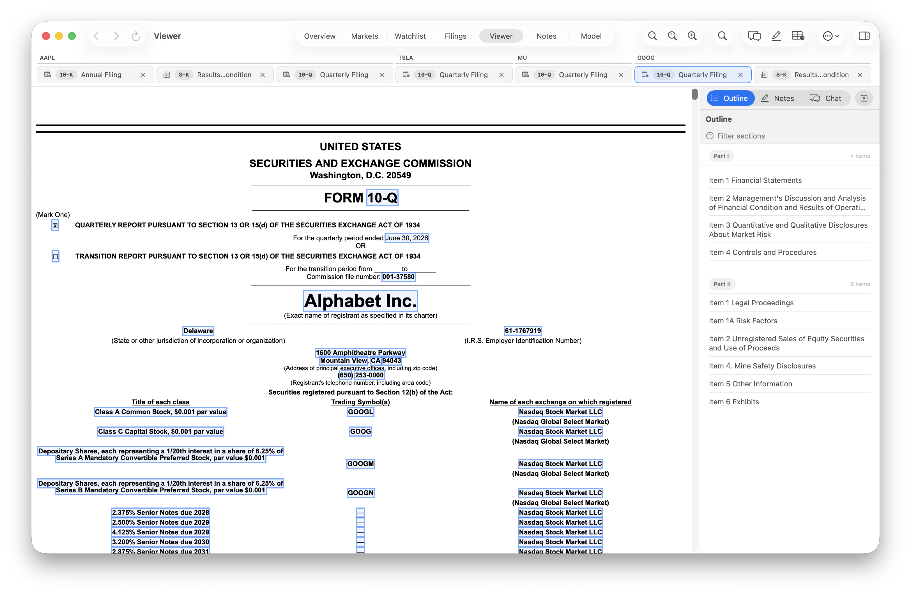
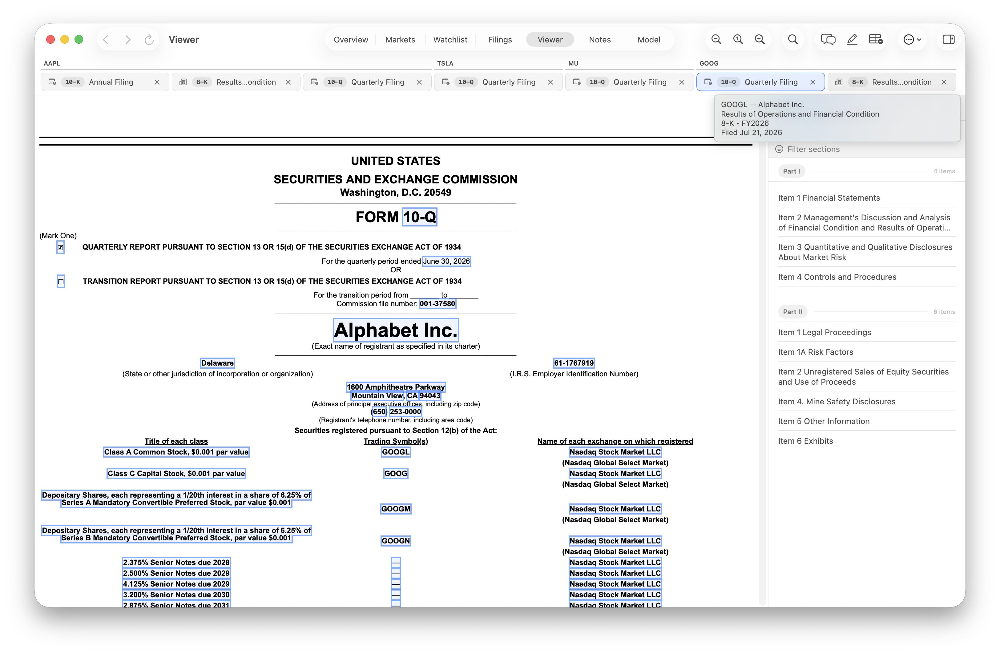
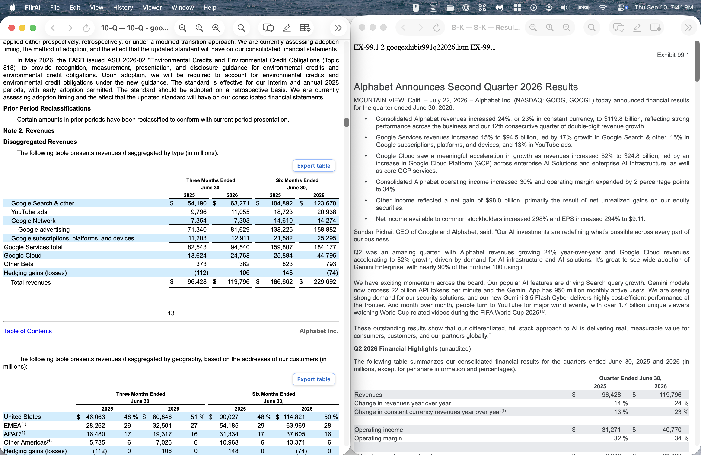
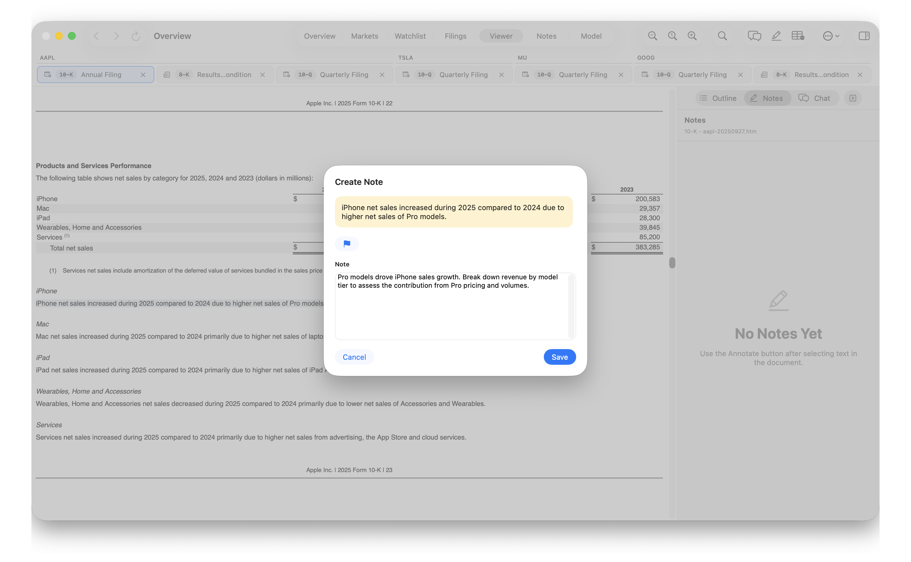

FilrAI Documentation
Document Viewer
The reference for reading documents and working directly with their contents.
Last updated
Workspace & tabs
The Viewer displays open documents in tabs. Each tab contains a document, with its tools in the toolbar and supporting panels in the sidebar. You can reorder tabs, arrange them by company, or detach a document into a separate window.
Workspace layout

- Document tabs. Select an open document. Company labels appear above the tabs when company groups are shown.
- Toolbar. Access zoom, search, document chat, annotations, and table extraction. Available controls depend on the document.
- Sidebar. Switch between Outline, Notes, and XBRL facts.
Working with tabs
Click a tab to select its document, or use ⌃ Tab and ⌃ ⇧ Tab to move between open tabs.
Tabs show the document type and title, with additional labels when space allows. Hover over a tab to see its details without switching documents. Filing tooltips include the company, filing description, form, fiscal period, and filing date when available.

Drag a tab left or right to change its position. The insertion marker shows where it will move.
Organizing and closing tabs
Right-click a document tab to open its menu.
- Arrange Tabs by Company
- Reorders tabs by ticker, or company name when no ticker is available. Documents from the same company stay in their existing relative order.
- Show Company Groups
- Shows or hides the company labels above adjacent tabs. This setting does not rearrange tabs; use Arrange Tabs by Company to bring a company’s documents together.
- Close Tab
- Closes the tab whose menu you opened. You can also use the tab’s × icon.
- Close All Tabs
- Closes all documents in the main Viewer workspace.
- Detach
- Moves the document into a separate window.
To reopen a recently closed document, choose History → Reopen Last Closed Tab from the Mac menu bar, or press ⌘ ⇧ T. See Keyboard shortcuts for the full reference.
Separate windows
Right-click a tab and choose Detach to move its document out of the main workspace. Position the detached window beside the main app or another detached document to read them side by side.

To return a detached document to the main workspace, open its More document actions (…) menu and choose Move Back to Viewer. You can also use Viewer → Reattach Active Viewer Tab from the Mac menu bar while that detached window is active.
Keyboard shortcuts
Find, zoom, and switch tabs with familiar Mac and browser shortcuts.
⌘ Command · ⌃ Control · ⇧ Shift
| Action | Shortcut | When it works |
|---|---|---|
| Next Viewer tab | ⌃ Tab | Switches documents in the main Viewer workspace. |
| Previous Viewer tab | ⌃ ⇧ Tab | Switches documents in the main Viewer workspace. |
| Reopen last closed tab | ⌘ ⇧ T | Available when a recently closed document can be reopened. |
| Action | Shortcut | When it works |
|---|---|---|
| Open Find | ⌘ F | In the active Viewer. |
| Next match | ⌘ G | With an active search; also advances through AI search results. |
| Previous match | ⌘ ⇧ G | With an active search. |
| Next match from the Find field | Return | While the Find field is focused. |
| Get AI search suggestions | ⌘ Return | Find is open, contains a query, and AI search is available. |
| Previous / next matching AI suggestion | ↑ / ↓ | The Find field is focused and matching suggestions exist. |
| Dismiss Find | Esc | While the Find popover is open. |
| Action | Shortcut | When it works |
|---|---|---|
| Zoom in | ⌘ + | In the Viewer. |
| Zoom out | ⌘ − | In the Viewer. |
| Reset zoom | ⌘ 0 | Web documents reset to 100%; PDFs return to automatic sizing. |
| Action | Shortcut | When it works |
|---|---|---|
| Create a note from selected text | ⌘ E | Select text in a document that supports annotations. Unavailable during table selection or extraction. |
| Cancel table selection | Esc | While selecting a table region. |
| Send a chat message | Return | While the chat message field is focused. |
| Insert a line break in chat | ⇧ Return | While the chat message field is focused. |
Annotations & notes
Create a note
Select a passage and click the annotation icon or press ⌘ E. Add a note, optionally flag it as important, and save.

Review saved notes
Saved notes appear in the Notes sidebar. Select a note to return to its passage, or right-click it to edit, flag, or delete it.
Hover over a highlighted passage to read its note in a tooltip.

Document chat
Ask questions about the open document in Chat. Select a citation under Document sources to jump to the supporting context.

XBRL facts
Select a highlighted value in an XBRL-tagged filing to inspect its concept, labels, fact value, accuracy, unit, period, entity, and dimensions in the XBRL facts sidebar. Use the toggle to show or hide fact highlights.

Table extraction & export
Export table
Select Export table to save a table as an Excel workbook. Choose Export as CSV to also save a CSV copy, and Reveal in Finder to locate the exported files.

Extract table
Some tables have missing XBRL data. Use the Extract table icon in the toolbar to select a table region and extract its contents.
Review the extracted table, adjust currency symbols or negative-number formatting, then select Copy TSV to paste directly into a spreadsheet.